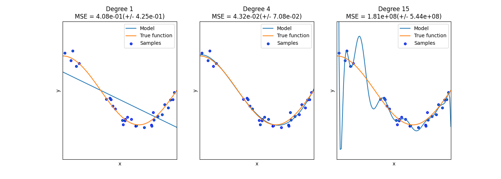

Note
Go to the end to download the full example code or to run this example in your browser via Binder
Underfitting vs. Overfitting¶
This example demonstrates the problems of underfitting and overfitting and how we can use linear regression with polynomial features to approximate nonlinear functions. The plot shows the function that we want to approximate, which is a part of the cosine function. In addition, the samples from the real function and the approximations of different models are displayed. The models have polynomial features of different degrees. We can see that a linear function (polynomial with degree 1) is not sufficient to fit the training samples. This is called underfitting. A polynomial of degree 4 approximates the true function almost perfectly. However, for higher degrees the model will overfit the training data, i.e. it learns the noise of the training data. We evaluate quantitatively overfitting / underfitting by using cross-validation. We calculate the mean squared error (MSE) on the validation set, the higher, the less likely the model generalizes correctly from the training data.
import matplotlib.pyplot as plt
import numpy as np
from sklearn.linear_model import LinearRegression
from sklearn.model_selection import cross_val_score
from sklearn.pipeline import Pipeline
from sklearn.preprocessing import PolynomialFeatures
def true_fun(X):
return np.cos(1.5 * np.pi * X)
np.random.seed(0)
n_samples = 30
degrees = [1, 4, 15]
X = np.sort(np.random.rand(n_samples))
y = true_fun(X) + np.random.randn(n_samples) * 0.1
plt.figure(figsize=(14, 5))
for i in range(len(degrees)):
ax = plt.subplot(1, len(degrees), i + 1)
plt.setp(ax, xticks=(), yticks=())
polynomial_features = PolynomialFeatures(degree=degrees[i], include_bias=False)
linear_regression = LinearRegression()
pipeline = Pipeline(
[
("polynomial_features", polynomial_features),
("linear_regression", linear_regression),
]
)
pipeline.fit(X[:, np.newaxis], y)
# Evaluate the models using crossvalidation
scores = cross_val_score(
pipeline, X[:, np.newaxis], y, scoring="neg_mean_squared_error", cv=10
)
X_test = np.linspace(0, 1, 100)
plt.plot(X_test, pipeline.predict(X_test[:, np.newaxis]), label="Model")
plt.plot(X_test, true_fun(X_test), label="True function")
plt.scatter(X, y, edgecolor="b", s=20, label="Samples")
plt.xlabel("x")
plt.ylabel("y")
plt.xlim((0, 1))
plt.ylim((-2, 2))
plt.legend(loc="best")
plt.title(
"Degree {}\nMSE = {:.2e}(+/- {:.2e})".format(
degrees[i], -scores.mean(), scores.std()
)
)
plt.show()
Total running time of the script: (0 minutes 0.131 seconds)